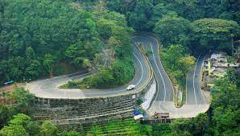

Wayanad
Wayanad is an Indian district in the north-east of Kerala state with administrative headquarters at the municipality of Kalpetta.
Wayanad is famous for the unparalleled freedom fight against the British and martyrdom of Pazhasshi Raja with the help of the Kurichya sect of the tribal community in association with Hindus and Muslims of the Malabar region. Kaniyambetta and Muttil Panchayaths are the centrally located Panchayaths having the best access from all corners of Wayanad when Tavinjal Panchayath is on the northeast border with Kannur district. The edicts and caves of Ambukuthi Mala and another evidence state that the place is as old as the beginning of the New Age Civilisation.

TOP DESTINATIONS

Pookkode Lake

Tholpetty Wildlife
Edakkal Caves